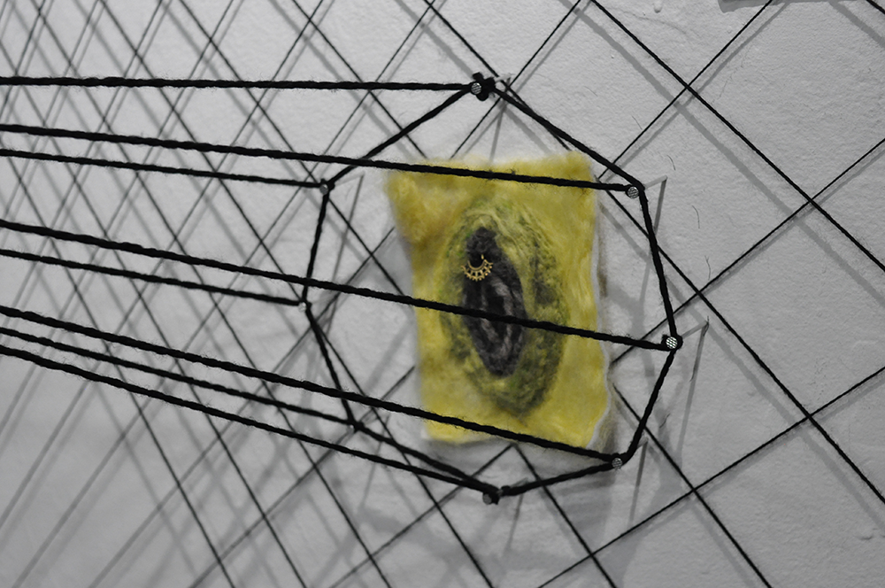
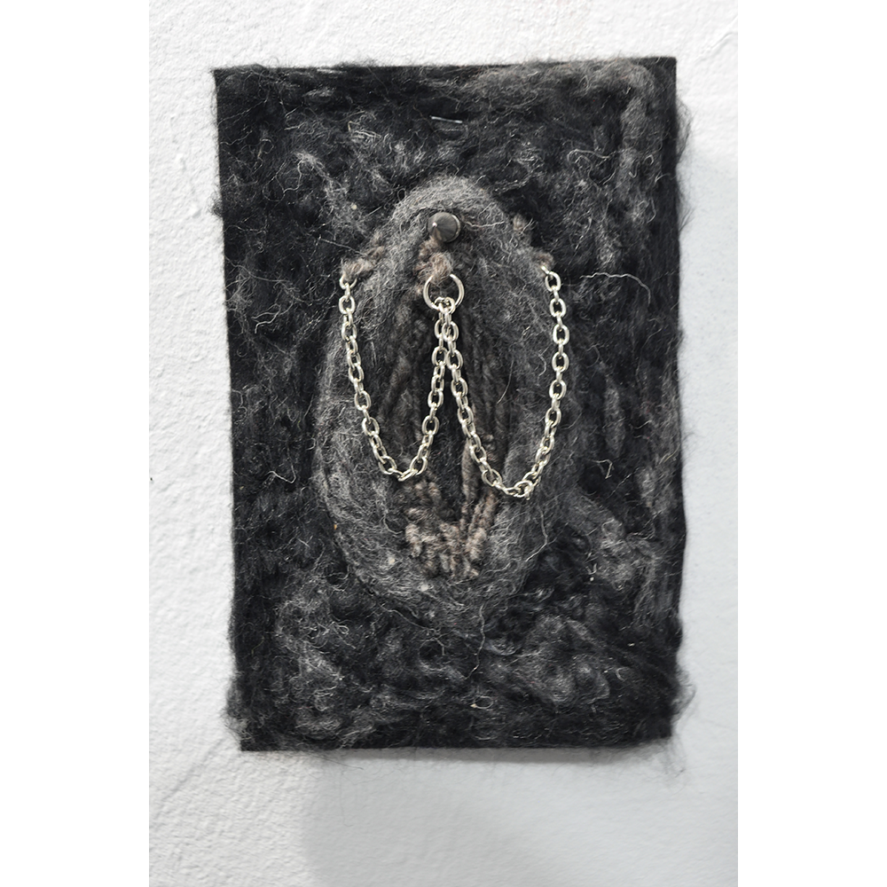

Vaginal Vortex: The installation aims to replicate the distant feeling of what its like to be truly safe within a confinement by recreating a vortex of sorts, mimicking the isolation one seeks when entering into a space within a space. The main wall displays an obliquely rendered alter of yonic figures, whilst the perpendicular walls offer a sense of balance through its sacred geometric symmetry. My body of work often explores the complexities and delights of womanhood, and the bewilderments of human existence in itself. I started making needle felted vaginas as a self expressive and playful exercise of blending colors and making familiar shapes. This installation for me, is my attempt to remember what its like being in a womb or cavity. I hope one feels a sense of rebirth or recovery from whatever the day brought by stepping into the installation. The incongruity of the main wall is mind blurring at first, but the two walls that hug its side are what keep it together. - JinHee Kwak
 